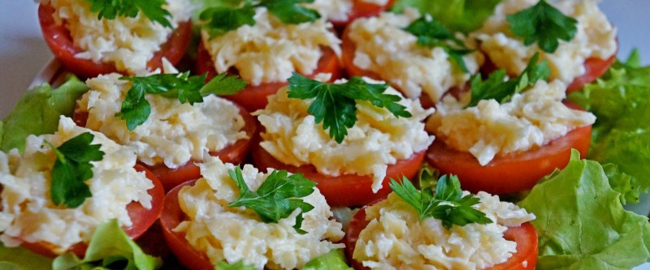

Помидоры с сыром чесноком

- TODO
Помидоры разрезать на давольно толстые кружки. Для начинки смешать мелко потертый сыр, порубленную зелень, чеснок и майонез.
Положить начинку на каждую помидорку.
 Назад к списку рецептов
Назад к списку рецептов